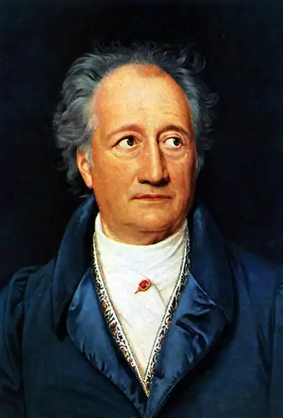
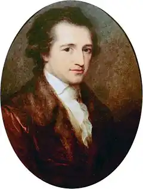
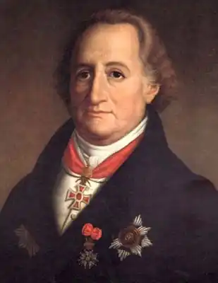

ЙОГАНН ВОЛЬФГАНГ ГЕТЕ
(1749-1832)
Гете — найвизначніший німецький поет, прозаїк, драматург, майстер художньої, виразної мови; філософ, натураліст і державний діяч. Його життя і діяльність нерозривно пов'язані з великим катаклізмом, котрий перетворив — під гуркіт війн і революцій — Європу феодальну, дворянсько-монархічну на Європу буржуазно-капіталістичну. Гете володів кількома іноземними мовами (французькою, італійською, англійською), вивчав художню літературу, історію, природничі науки, займався музикою та малюванням. Народився 28 серпня 1749 року у Франкфурті-на-Майні, "вільному" імперському місті, котре за часів дитинства й ранньої юності Гете залишалось наполовину середньовічним містом. Йоганн Вольфганг — син заможного імперського радника Йоганна Каспара Гете, котрий не міг похвалитися родовитістю, і Катаріни Єлизавети, уродженої Текстор. В автобіографічній книзі "Поезія і правда" (1814) поет писав про своє народження: "Двадцять восьмого серпня 1749 року, опівдні, з дванадцятим ударом дзвону, я з'явився на світ у Франкфурті-на-Майні. Розташування сузір'їв сприяло мені..." Поет був переконаний, що розташування планет впливає на долю, і у Всесвіті кожному випадає особливе місце, тому що людина — суттєва частка космосу. Гете вірив у свою зірку і з усіх сил сприяв щасливому призначенню. Його заповнене різноманітними заняттями й пошуками життя було суворо підпорядковане внутрішній дисципліні. Він вибудовував свою біографію за ретельно обміркованим і тільки йому відомим планом. Гете — у найкращих своїх творах —— це найдовершеніший зразок мислення в образах. Поезія Гете внутрішньо пронизана філософією, і не тільки там, де поет прямо переповідає про високі істини, але й там, де він розповідає, наприклад, про якесь інтимне переживання,— він є найглибшим філософом. Дослідники підрахували, що Гете написав понад 1600 віршів. Його твори народжувалися як відгук на безпосередні життєві враження і переживання. Він віддавався цілком, почуттям, пристрасть веліла йому висловити її в поетичних рядках. Разом з тим Гете завжди надзвичайно скромний і коректний у передачі ліричних переживань. Вірш "Побачення і розлука" (1771) присвячений Фрідеріці Бріон. Попри схвильованість і надлишок почуттів, ліричний герой є шляхетно-цнотливим. Зустріч закоханих відбувається тільки в мріях і спогадах. Початок творчого шляху Гете пов'язаний з літературним рухом, представники якого виступали під девізом "Буря і натиск!" Ці поети і драматурги іменували себе "штюрмерами" — від німецької назви "Sturm und Drang". Вірш "Прометей" — це темпераментний монолог заступника людей Прометея, який кидає тиранові Зевсу виклик, стверджуючи, що верховний небожитель — лише породження людських забобонів і страхів. Волелюбні бунтарські настрої молодого Гете проявилися також у його драмі (1773), матеріалом для якої послугував життєпис Готфріда фон Берліхінгена, написаний ним у 1557 році, але надрукований в 1731 році. Гец (скор. від Готфрід) — реальна історична особа. Наслідуючи Шекспіра, Гете ігнорує три єдності у класицизмі, у драмі 56 швидко змінюваних епізодів, безліч персонажів. "Гец фон Берліхінген" написаний прозою, герої розмовляють простою, часом навіть грубуватою народною мовою. Роман "Страждання юного Вертера" (1774), написаний у Веймарі, де Гете за наполегливою вимогою батька стажувався в імперському суді, зробив автора уславленим не тільки у всій Німеччині, але й у всій Європі. Гете обрав для "Вертера" епістолярну форму. Листи — це своєрідна сповідь героя. Події роману відбуваються з травня 1771 року по грудень 1772 року. Отже, час дії і час написання роману надзвичайно близькі. Епістолярний роман — улюблений жанр епохи сентименталізму. Гете цілком в дусі сентиментальних творів прославляє любов, глибокі щирі почуття, на які здатна людина незалежно від своєї станової приналежності. Гете одним з перших виголосив світові свої ідеї: гідність людини не в її предках, не в майновому стані, а в ній самій — в її особистості, в її таланті, інтелекті й вчинках. На схилі років Гете розповів у "Поезії і правді" про те, що він написав "Страждання юного Вертера", щоб звільнитися від думки про самогубство, яка переслідувала його. Однак вчинок Вертера виявився настільки заразливим, що після видання перекладів роману у Франції (1774), в Англії (1776), Голландії (1781), Італії (1781), Швеції (1783) і Росії (1788) Європою прокотилася хвиля самогубств юнаків, котрі готові були ціною життя довести істинність своєї пристрасті. Роман "Страждання юного Вертера" залишився у світовій літературі як неперевершений твір про трагічну нерозділену любов. У 1775 році Гете прийняв запрошення саксен-веймарського герцога Карла-Августа і переїхав до Веймара. Він став першим міністром герцога, одержав титул таємного радника. Дослідник творчості Гете Н. Н. Вільмонт так пояснив мотиви цього вчинку: "Від'їжджаючи до Веймара, Гете плекав надію домогтися радикального поліпшення суспільних відносин хоча б на невеликому клаптику німецької землі, у володіннях Карла-Августа, для того, щоб цей клаптик землі послугував зразком для всієї країни, і проведені там реформи стали б прологом загальнонаціональної перебудови німецького життя". Гете незабаром переконався, що це було утопією, бо герцог, зрозуміло, забув про свої благі наміри. Гете поступово обмежує, свою державну службу, залишаючи за собою лише театр і навчальні заклади. Утомлений та розчарований, Гете в 1786 році їде з Веймара і два роки проводить в Італії. Він жадібно всотує враження від навколишнього життя, тонко поціновує витвори мистецтва. Простоту й спокійну велич античної культури він називає головним художнім принципом, вивчає античне й ренесансне мистецтво, пробує себе в живописові. Відмовившись від бунтарства ранніх років, він вбачає мету своєї творчості в мирній пропаганді просвітницьких ідей. У його трагедії "Іфігенія в Тавриді" (1779-1786), написаній на сюжет давньогрецького міфу, нова героїня виступає справжнім борцем проти варварства й жорстокості, діючи силою переконання. Але потім Гете повертається до Веймара і залишає його тільки заради недовгих поїздок до Карлсбада, Марієнбада та до інших місць, де він поправляв здоров'я. Усе життя Гете тепер протікає у Веймарі, де до нього приходить світове визнання, розкривається його універсальний талант поета й прозаїка, драматурга й літературного критика, театрального постановника, актора, художника, археолога й натураліста. Гете зазвичай подовгу працював над більшістю своїх творів. Приміром, задум драми "Егмонт" виник ще у 70-х роках XVIII століття. Однак поет закінчив її в Італії в 1787 році, а в наступному — надрукував. У трагедії відбилося юнацьке захоплення Гете Шекспіром. Німецький драматург, як і Шекспір, звертається до історичної епохи, вкрай напруженої, коли в тугий вузол протиріч сплелися політичні й релігійні конфлікти. Прагнучи відтворити події правдиво, Гете обирає прозаїчну форму, що для того часу було новаторством, адже драми писалися віршами. У творчості Гете після повернення з Італії відбилися нові естетичні погляди, що дослідники визначають як "веймарський класицизм". Поет тепер віддає перевагу класичним формам античного мистецтва, він стриманий у вираженнях своїх ідей. Його позиція вирізняється більшою врівноваженістю. У період гострих соціальних сутичок він досить обережно виявляє свої симпатії й антипатії. Це особливо позначилося в епічній поемі "Герман і Доротея" (1798). Гете зробив рідкісну й досить вдалу — створити ідеальні зразки постатей своїх сучасників. Головні персонажі поеми приваблюють почуттям власної гідності, доброзичливістю, красою і працьовитістю. Життя Германа й Доротеї напрочуд гармонійне, адже за будь-якої важкої ситуації вони слухають веління своїх добрих сердець. Епічна поема "Герман і Доротея" приваблює нас і сьогодні своїм оптимістичним баченням світу та мирної праці. Гете звинувачували в тому, що він не зрозумів значення французької буржуазної революції. Докори ці несправедливі. Усвідомлюючи закономірність виступу третього стану, який штурмом захопив Бастилію, Гете засуджував вади вождів повсталого Парижа і якобінський терор. Якими б творчими задумами не переймався Гете, він завжди незмінно повертався до віршів. Форми й жанри його ліричних творів мінялися, як змінювалися з роками і десятиліттями погляди геніальної людини, котра жила напруженим духовним життям. Іншими ставали його погляди на людину, на взаємини націй і класів. Гете поступово схилявся до думки, що єдиною силою, яка здатна влагіднити вдачу людини, є мистецтво, отже, лише краса облагороджує кожну людину й народу цілому. Він не заперечує своїх юнацьких тираноборчих настроїв, але переосмислює їх у своїй зрілій поезії, вносить заспокійливі настрої. Поворотний етап у розвитку поезії Гете позначився в елегії "Ільменау" (1783). Елегія "Ільменау" виражає ідеал, який упродовж багатьох років буде утверджувати своєю творчістю Гете: кожна людина, хто б вона не була — князь чи поет, актор чи рудокоп або селянин — зобов'язана виконати свій обов'язок, слугувати своєму покликанню і тим самим слугувати людям, удосконалювати життя і прикрашати землю. Поняття обов'язку стає центральним у системі моральних орієнтирів Гете. У перше веймарське десятиліття Гете написав другий свій роман "Театральне покликання Вільгельма Мейстера". Однак роман не був виданий, а згодом текст був перероблений для нового роману з тим же героєм — "Роки навчання Вільгельма Мейстера". Гуманізм цього роману виражений у наполегливо повторюваній думці: страждання поєднує людей, колективно пережитий трагічний досвід робить людство сильнішим і хоробрішим. "Крізь страждання до радості" — ця думка Шиллера була близька й Гете. Два видатних німецьких поети — Шиллер і Гете — у 1797 році дружно змагалися в написанні балад. Гете був ініціатором відродження цього жанру. Балади Гете "Лісовий цар", "Коринфська наречена" та інші були написані в традиціях моторошної похмурої балади. Джерелами до них слугували античні міфи й середньовічні перекази. Баладам Гете притаманне щось загадкове. Гете передає відчуття нічних страхів, таємниче, потойбічне вривається в реальне життя. Таланту Гете була властива універсальність.